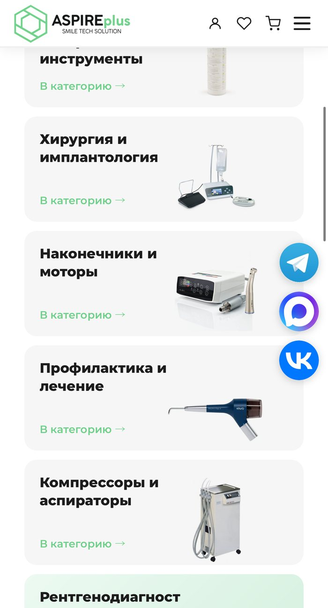

Коммерческий проект · реализован самостоятельно
Интернет-магазин ASPIRE plus SERVICE
- Каталог оборудования и расходных материалов для стоматологических клиник: 11 основных категорий, страницы товаров, бренды.
- Корзина, избранное, личный кабинет (вход и регистрация по email).
- Сервисный центр с формой заявки на ремонт, страницы «Доставка и оплата», «Как купить», «Контакты», новости, блок акций.
Разработала сайт одна, от структуры каталога и пользовательского пути до личного кабинета.
aspire-plus-service.ru